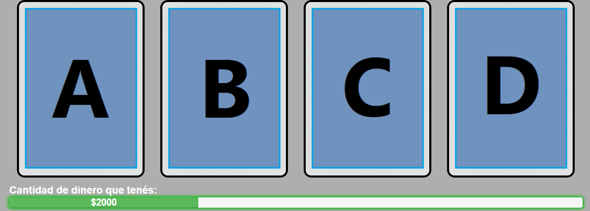
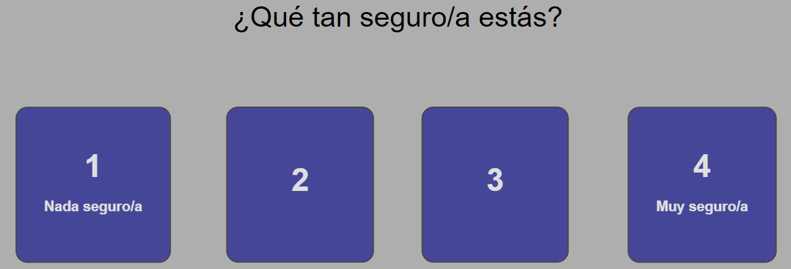

Cantidad de dinero que tenés:
Ganaste:
Perdiste:
Resultado neto +/-:
Total de dinero:
¡BIENVENIDX!
Gracias por sumarte a este experimento online. Antes de contarte de qué se trata, para participar tendrás que leer la información sobre el estudio y aceptar el consentimiento informado.
INFORMACIÓN SOBRE EL ESTUDIO:
Usted está siendo invitado/a a participar de un proyecto de investigación denominado Tarea de Apuestas de Iowa y Metacognición que se desarrolla en Instituto de Investigaciones Psicológicas (IIPsi - CONICET - Facultad de Psicología, Universidad Nacional de Córdoba) y es coordinado por el Lic. Nicolás Alejandro Comay y la Lic. Julieta María Zapata.
Antes de otorgar su consentimiento es importante que lea cuidadosamente y comprenda la información detallada sobre el presente estudio. Puede realizar todas las preguntas que desee o solicitar la explicación de palabras que no comprenda.
Se utilizarán los datos para una investigación psicológica cuyo objetivo es evaluar la influencia del conocimiento sobre la toma de decisiones en una tarea de apuestas (Tarea de Apuestas de Iowa).
Su participación consistirá en realizar una tarea de manera online. Se trata de un juego de cartas en el que, en cada ensayo, puede ganar o perder dinero ficticio. El objetivo del juego es finalizar con la mayor cantidad de dinero posible. Las instrucciones se muestran en mayor detalle antes de comenzar. El tiempo de duración de la tarea será de 25 minutos, aproximadamente. Le pedimos que realice la tarea hasta el final ya que, de lo contrario, no se guardan los datos en el sistema (aunque puede abandonar la tarea libremente cuando quiera si lo cree necesario simplemente cerrando esta ventana).
Riesgos e incomodidades previstas: Participar en esta investigación tiene riesgos nulos. Puede abandonar el estudio o suspender su participación cuando así lo desee y sin explicación alguna. Su negativa a participar no le ocasionará ningún perjuicio.
Beneficios y compensaciones: según el puntaje con el que finalice el juego usted tiene la posibilidad de ganar un premio. Los tres participantes (entre 50 personas) que logren los mejores puntajes en la tarea obtendrán un voucher de compra en una librería: un monto de $3000 para el primer puesto, $2000 para el segundo puesto y $1000 para el tercer puesto. Al finalizar la toma de datos nos comunicaremos por mail con los ganadores para coordinar la entrega del premio. Es por esta razón que le solicitaremos su dirección de mail al finalizar, para comunicarnos en caso de que resulte ganador (su dirección de email no será difundida con otros fines). En caso de haber empate entre participantes, el premio será sorteado entre los jugadores que hayan finalizado con el mismo puntaje.
Aceptando el consentimiento informado, usted no renuncia a ninguno de los derechos que le corresponden según las leyes de nuestro país. Los resultados podrán ser publicados en revistas científicas o presentados en congresos, pero no incluirán datos personales que puedan identificarlo. La Ley 25.326 de protección de datos personales salvaguarda su información personal. Los datos personales, es decir los registros que se efectúen, serán identificados solo con un código y solo se utilizarán para los propósitos mencionados en este estudio.
Los datos de este estudio se almacenarán en un lugar seguro, el Instituto de Investigaciones Psicológicas, en conformidad con las regulaciones de la Asociación Americana de Psicología. Usted también tiene derecho a enviar un mensaje al equipo de investigación para obtener una copia de sus datos, corregirlos o solicitar que se eliminen.
Si tiene dudas como participante en una investigación puede comunicarse con el comité de ética que aprobó esta investigación, CEIIPsi comite.etica.iipsi@psicologia.unc.edu.ar
Para consultas relacionadas con el diseño de la investigación puede contactar al equipo de investigadores/as: Julieta Zapata (Julieta.m.zapata@gmail.com) y Nicolás Comay (nicocomay@gmail.com)
CONSENTIMIENTO INFORMADO:
Al hacer click en el botón ACEPTAR que se encuentra al final de la página, expresa su conformidad para participar de una investigación titulada “Tarea de Apuestas de Iowa y Metacognición" que le ha sido claramente explicada. Confirma haber leído y comprendido la hoja de información, haber tenido la posibilidad de formular las preguntas y estar satisfecho/a con la información recibida. Confirma haber sido informado por los investigadores cuyos nombres se encuentran en el presente documento.
Confirma tener conocimiento de que su participación es libre y voluntaria y que puede retirarse sin perjuicio cuando lo desee.
Entiende que recibirá una remuneración solo en caso de resultar ganador entre los tres primeros puestos en el juego.
Los resultados podrán ser presentados en reuniones científicas o publicados en revistas especializadas manteniendo siempre la reserva de los datos personales.
Confirma ser mayor de 18 años.
Certifica no tener antecedentes de enfermedades neurológicas o psiquiátricas, ni consumir de manera crónica sustancias psicoactivas (alcohol, marihuana, etc.)
Acepta las cookies que utiliza esta página (el IP es registrado automáticamente, pero no es guardado por los investigadores responsables del estudio).
TAREA DE APUESTAS DE IOWA
Bienvenido/a. Esta tarea se trata de un juego de cartas en el que, según la carta que elijas, ganarás o perderás dinero. El objetivo del juego es finalizar con la mayor cantidad de dinero posible. Estas son las reglas del juego:


Antes de empezar, te pedimos que completes los siguientes campos:
Cuando estés listo/a, presiona el botón 'comenzar'. ¡Mucha suerte!
HACÉ CLICK AQUÍ PARA CONTINUAR
¿Qué tan seguro/a estás?
La tarea ha finalizado, ¡muchas gracias por haber participado!
Cada vez somos más investigadores realizando experimentos online para entender científicamente diferentes procesos cognitivos. Si querés ayudar a esta red, podés anotarte para participar de futuros experimentos tocando el botón que dice "finalizar y sumarme a nuevos estudios". Ese botón te redirigirá a un grupo de Google de experimentos online creado y administrado por investigadores de CONICET. Uniéndote a ese grupo, cada vez que haya un experimento nuevo te llegará un mail invitándote a participar (nunca se usará el grupo para otra cosa y tu email permanecerá confidencial).
Si preferís que no, simplemente tocá el botón que dice "finalizar estudio".
Es imporante que toques uno de los dos botones así tus respuestas quedan registradas. Si por la razón que sea no querés que tus resultados sean guardados, simplemente cerrá esta ventana sin tocar ningún botón de finalización.
Si tenés dudas y/o consultas, podés escribirle a les investigadores responsables de este estudio: